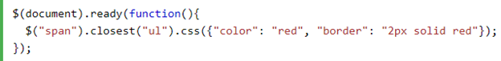

Closest() method begins its search with the element itself before progressing up the DOM tree, and stops when current element matches the selector.

.parents() Begins with the parent element, get the parent of each element in the current set of matched elements